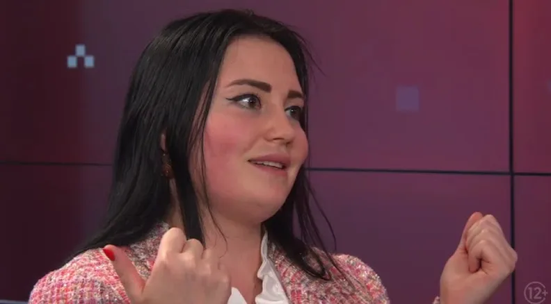
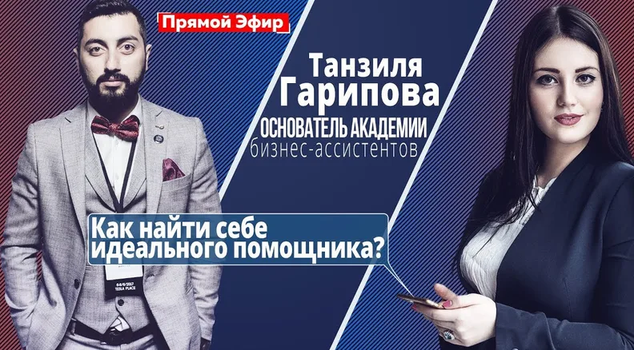
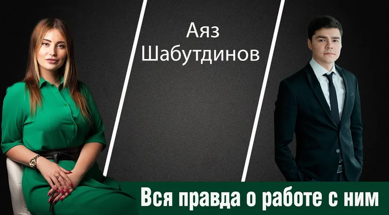
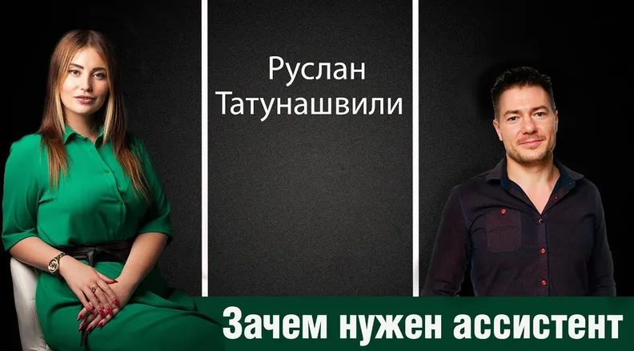

+7 968 948 8888
+7 968 948 8888Бизнес-ассистентки: тайная страсть и большие деньги. Подкаст «Раскрыватор»
Сколько стоит ассистент в Москве, регионах и онлайн, где его искать и что спросить на собеседовании. Красные флаги кандидатов и мифы о романах с ассистентами.
Смотреть выпускОт 15 тыс. ₽ онлайн до 300 тыс. ₽ за проектного менеджера
Чаты ассистентов, «вкусная» вакансия, рекомендации
4 вопроса на собеседовании и 6 красных флагов
Инструкция «как со мной работать» и 10-балльная мотивация
Выберите тему – найдём нужный выпуск
Сколько стоит ассистент в Москве, регионах и онлайн, где его искать и что спросить на собеседовании. Красные флаги кандидатов и мифы о романах с ассистентами.
Смотреть выпускМожет ли ИИ заменить ассистента, как выбрать помощника и не обжечься и правда ли, что бизнес – только для мужчин.
Смотреть выпускЧто передать ассистенту, сколько стоят управляющий домом, домработница, няня и водитель и как справиться со страхом делегирования.
Смотреть выпуск
Что случилось с рынком труда после 2022 года: почему кандидатов стало больше, чем вакансий, и как компании сохраняли команды при переезде.
Смотреть выпускКак в 23 года пройти путь от бизнес-ассистента до основательницы Академии: детство в плотном графике, учёба и привычка стоять на своих ногах.
Смотреть выпуск
Как Танзиля начинала помощником Аяза Шабутдинова и пришла к подбору ассистентов. Где искать помощника и кому подойдёт график 24/7.
Смотреть выпускСюжет НТВ о профессии бизнес-ассистента и Академии Танзили Гариповой.
Смотреть выпуск
Аяз рассказывает, какой Танзиля была в роли его ассистента: автоматизировала задачи и брала «невыполнимое». А потом открыла свою школу.
Смотреть выпуск
Руслан Татунашвили, Чермен Дзотов, Илья Щетников, Валерий Домашенко и другие – зачем руководителю помощник и что ему передать.
Смотреть выпускИсполнитель. Говорите, что сделать, и проверяете.
Специалист. Описываете нужный результат – путь он найдёт сам.
Правая рука. Делитесь целями компании – он сам раскладывает их на задачи.
«Какой ваш самый большой провал?»
«Какую самую большую сумму – не свою – вы держали в руках?»
«Как вы подвели руководителя и как это исправили?»
«Брали ли вы бонусы от подрядчиков?»
Дайте ассистенту «инструкцию по пользованию собой»: какой кофе вы пьёте, где сидите в самолёте, как к вам обращаться. А рекомендации берите у 2–3 прошлых руководителей, а не у одного.
Про найм, делегирование, работу с ассистентом. Лучшие вопросы разберём в эфире.
Ведущая
Основатель Академии ассистентов, автор методики «Ассистент за 6 недель» и книг о работе ассистента и делегировании. Начинала карьеру личным помощником предпринимателя и более 12 лет работает в сфере обучения и подбора ассистентов.